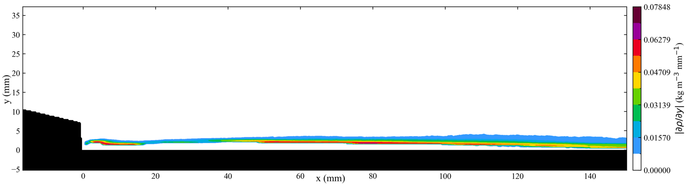
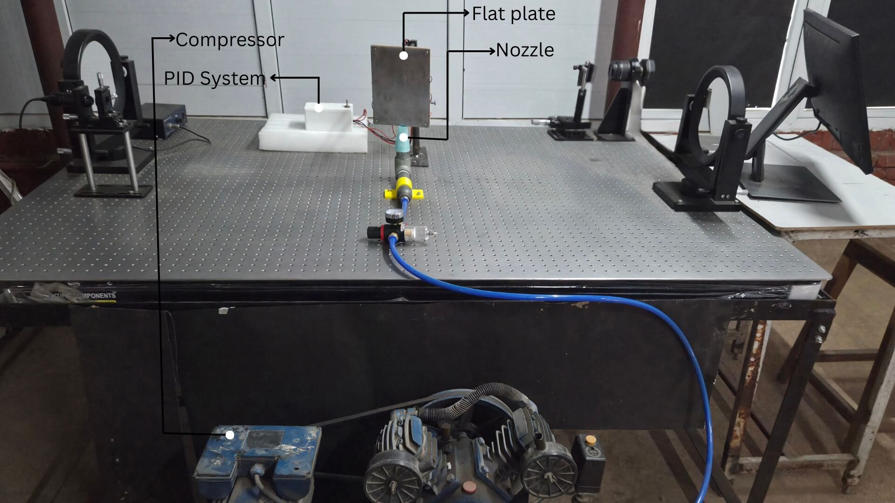
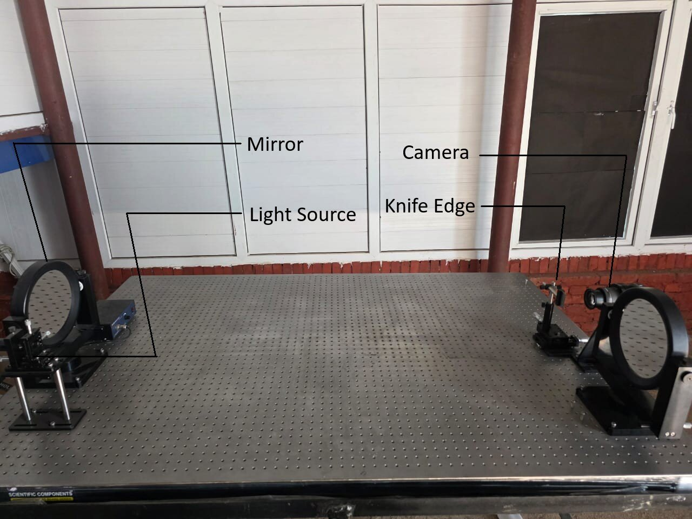
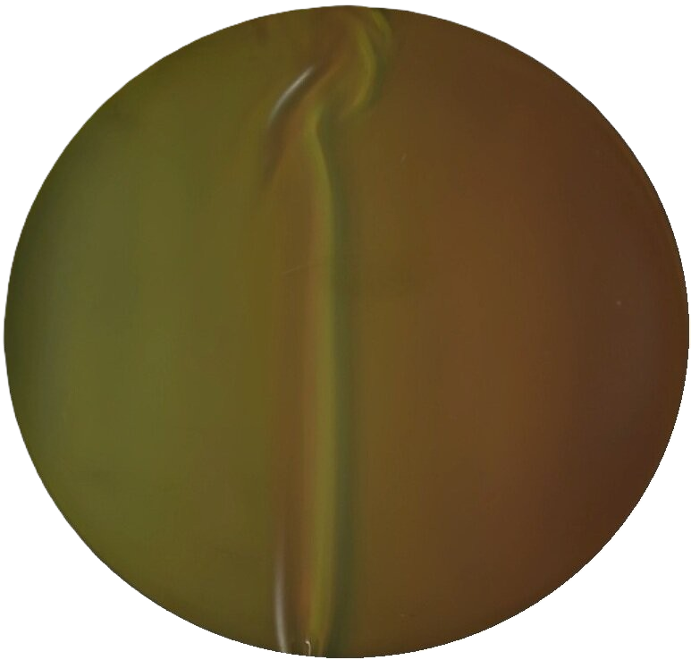
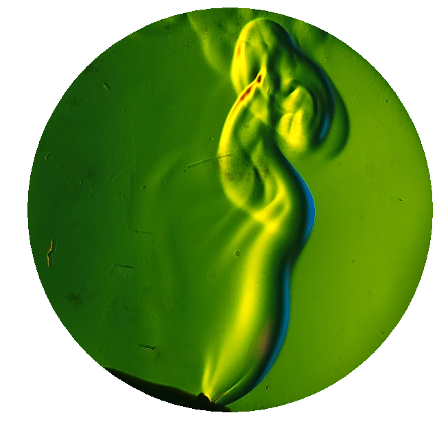
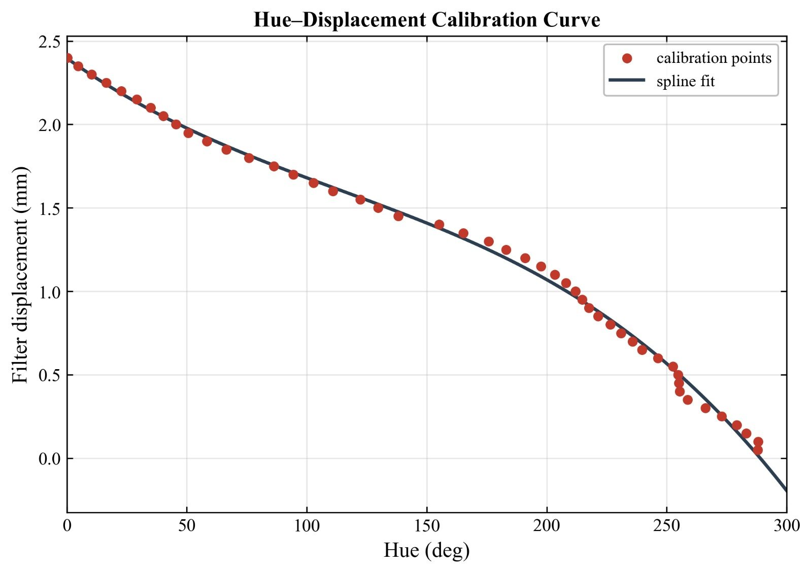
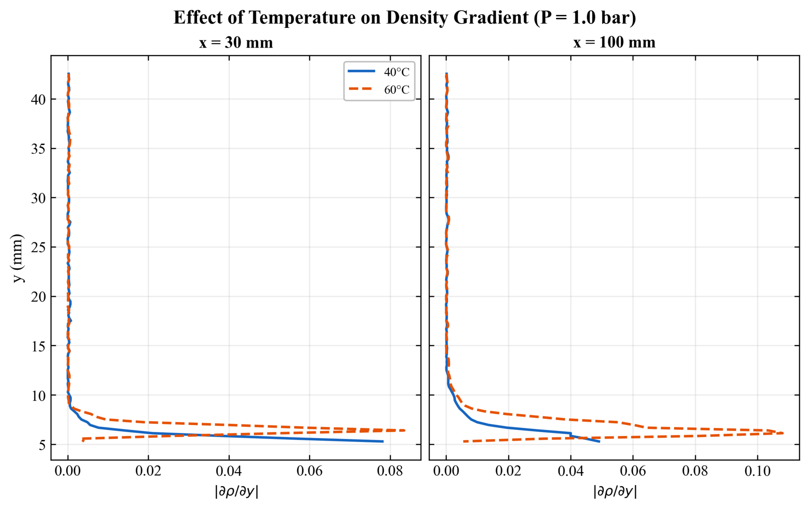
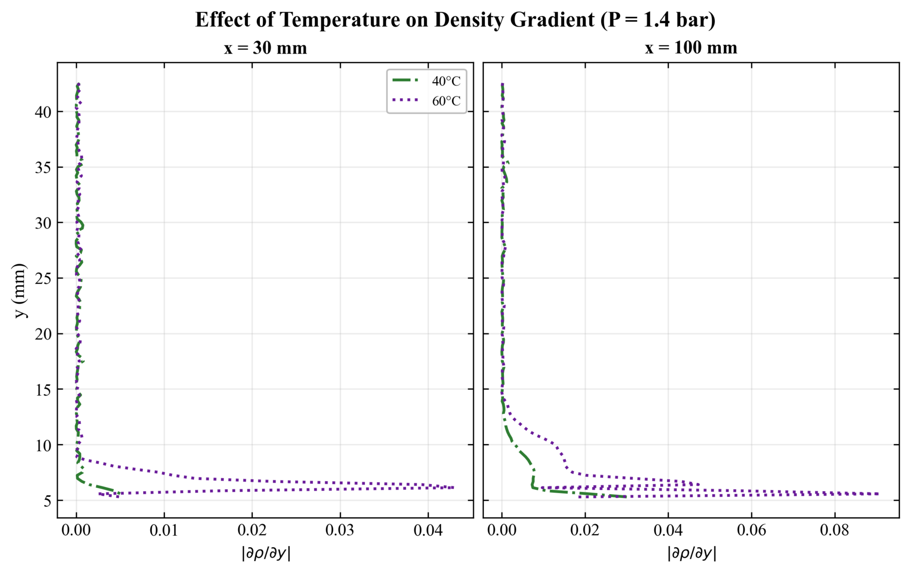
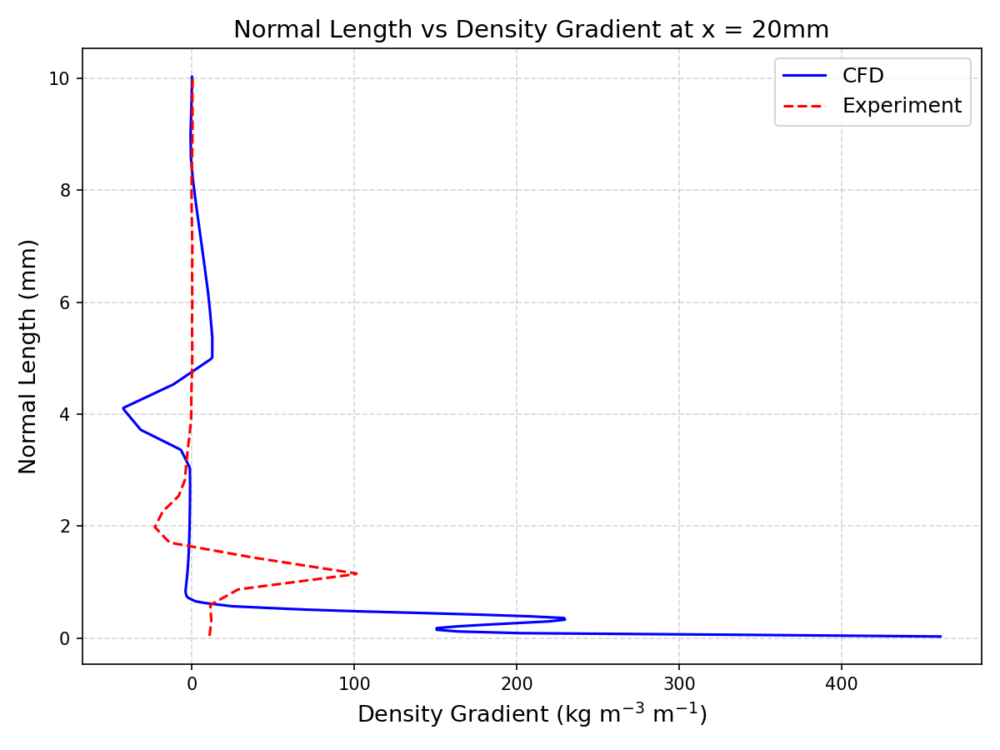
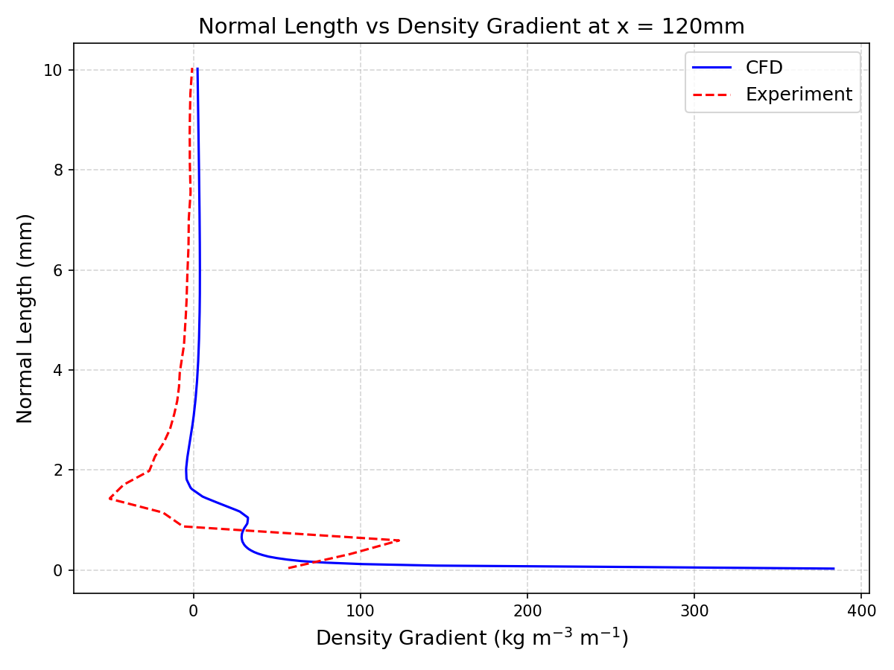

Build the jet
A compressor feeds a 3D-printed converging nozzle. An Arduino Nano PID controller drives Peltier modules beneath the plate to hold the two temperature settings.
Study of the Surface Heating Effect on a Compressible Wall Jet Using Rainbow Schlieren Deflectometry

A high-subsonic air jet travels along a metal plate. Heating the plate changes the near-wall density field, but the effect is hard to see directly. Our four-person team built the jet facility and an optical measurement system, then used calibrated color images to reconstruct density gradients and compare them with a CFD model.
Rainbow Schlieren Deflectometry (RSD) converts tiny light-ray deflections into hue changes. With a measured filter calibration, the colors become quantitative data rather than visual effects.
A compressor feeds a 3D-printed converging nozzle. An Arduino Nano PID controller drives Peltier modules beneath the plate to hold the two temperature settings.
Two parabolic mirrors form a Z-type schlieren path. A fine-grain color filter replaces the usual knife edge so ray deflection appears as a hue shift.
The team's pyrsd Python library calibrates hue to displacement, averages frames, and reconstructs density and temperature fields.


Early transparency prints introduced visible halftone artifacts and lost light. E6 slide film produced a cleaner color gradient that could be calibrated against known filter displacements. That change made quantitative imaging practical.



The filter was moved through known positions on a translation stage. An image at each position produced a hue-to-displacement calibration curve for that filter and optical alignment.
Capture the stepped-filter sequence and fit a smooth hue-to-displacement curve.
Record a no-flow background, then subtract its displacement field from the flow images.
Use the optical geometry and Gladstone–Dale relation to obtain density gradients; integrate to recover density, then derive temperature.
Calibration is sensitive to alignment, lighting, and camera white balance, so a curve from one session should not be assumed valid for another. See the team's pyrsd library account for the complete processing pipeline.
At lower jet pressure, raising the wall from 40 °C to 60 °C produced a stronger near-wall density-gradient response. At the higher pressure, the temperature effect was much less distinct close to the nozzle and became clearer downstream. The two inputs cannot be understood as independent effects.
Natural-convection temperature recovery relative to the known plate setting.
Approximate difference in near-nozzle peak gradients. The cause remains unresolved: camera sharpness, spatial resolution, optical averaging, and CFD modeling could all contribute; the gap narrows downstream.


A 2D steady RANS model in ANSYS Fluent used the k–ω SST turbulence model for the wall jet. Its near-wall peak gradients were much larger than those recovered by RSD close to the nozzle, although the profile shapes were similar and the difference narrowed downstream. This comparison does not establish which method is closer to the true peak.


The cause is unresolved. Limited image sharpness and spatial resolution could smooth a narrow experimental peak; line-of-sight averaging could do the same. The CFD may also exaggerate the peak because it reduces a three-dimensional flow to 2D and depends on a turbulence model. Better-resolved images and additional model checks are needed before attributing the difference. Exit Mach numbers in the report are CFD estimates, not direct measurements.
Final-year project at IOE Pulchowk Campus by Anup Bajgain, Amogh Adhikari, Toran Bahadur Niroula, and Yogesh Dhami, supervised by Asst. Prof. Kamal Darlami and Asst. Prof. Laxman Motra.